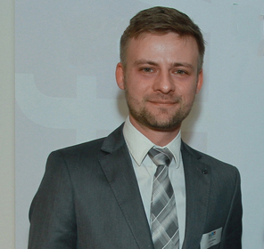

Навчи мене CRISPR!
Кристофер — молодий мікробіолог та добропорядний аспірант, сумлінно працював над своєю дисертацією в одному з інститутів Відня. Власне його темою були механізми бактеріального імунітету. Але згодом трохи несподівано в цій роботі вдалося розгледіти величезні масштаби для практичного застосування — настільки великі, що це вилилося в багатомільйонний патент. Не обійшлося також і без негарної історії з розподілом коштів — бо згідно Австрійського законодавства, власником патенту є наукова установа, тобто інститут, але наукового керівника, пані Дудну то не влаштувало і вона в результаті навіть змінила країну, щоб отримувати роялті в повному обсязі... Але як там не є, але це той випадок, коли твоя дисертація стає не просто мегабайтами на жорсткому диску, а буквально — частиною майбутнього людства.
Саме Кристофер безпосередньо створював і продовжує створювати тих мутантів, чи то пак, криспантів на різних моделях — починаючи від рослинок, мишок, рибок, закінчуючи тасманійськими дияволами та лініями стовбурових клітин людини. Ось так набирає в мікрошприц секретну суміш, здійснює маленьку ін‘єкцію (а здебільшого, не одну), і все — офіційно ти — ГМО :) Але про це трохи згодом.
А якщо серйозно, то ці технології обіцяють ефективне лікування здавалося б, ще вчора, невиліковних хвороб.
Що ж таке технології криспер (CRISPR) і до чого тут імунітет бактерій?
Бактерії — малесенькі одноклітинні організми і такого імунологічного арсеналу зброї, як у вас з нами, вони дозволити собі не можуть. Але тим не менше, як виявилося, нам є чому у них повчитися!
Для чого бактеріям імунітет і від кого вони захищаються? Наприклад — від вірусів. І хоч вірус грипу на бактерії не нападає, існує сила-силенна вірусів бактерій, які називаються бактеріофагами.
Коли вірус потрапляє у клітину, то намагається вбудувати свою ДНК у ДНК бактерії — щоб використати її ресурс для розмноження. А бактерія в свою чергу намагається якось від тієї біди позбутися. І поки вірус вбудовується в її ДНК, вона зчитує та вбудовує ту вірусну ДНК у спеціальні ділянки на своїй хромосомі, які мають цю чудернацьку назву — CRISPR, або ми ще її називаємо крисперами. Характерною їх особливістю є паліндромність (це коли в обидва боки ДНК читається однаково , як оте <<Козак з казок>>). Тобто по суті криспери це ділянки ДНК , яку бактерія може легко вичитати (саме завдяки розпізнаванню тих повторів, які читаються однаково в обидва боки) та дізнатися, що ж за така болячка до неї причепилася.
На ділянці криспера синтезується молекула РНК , яка по суті є фотороботом злочинця — вірусної ДНК. А тоді крутий суворий агент Cas9 (ну майже 007), він же каспаза (це такий фермент, який розрізає ДНК) разом із тим фотороботом організовує обшук бактерійної ДНК на факт наявності у ній частинок чужорідної вірусної ДНК. Коли знаходить — акуратненько її вирізає і вона знову, як новенька.
Вчені підгледіли той механізм і спробували підсунути крисперам та каспазі якусь іншу РНК. І воно запрацювало! Таким чином, можна вирізати із своєї ДНК живої клітини та навіть організму будь що!
Справедливо зауважити, що окрім Cas9 існує ще добра сотня схожих ендонуклеаз Cas. Вони були відомі і раніше, однак саме в команді Jennifer Doudna звернули увагу на їх потенціал для внесення направлених змін в ДНК.
Що це нам дасть та коли?
Ця технологія відкриває широкі можливості в багатьох сферах, починаючи із нових прийомів у подоланні антибіотикорезистентності смертоносних бактерій, закінчуючи лікуванням деяких видів онкозахворювань. Але насамперед це буде можливість лікувати ряд генетичних хвороб, які раніше були невиліковними. Для початку — хвороби, спричинені порушенням роботи одного гену. На сьогодні відомо близько 6 тисяч хвороб такого типу. Наприклад, фенілкетонурія (про неї більшість із нас дізнається із етикеток деяких продуктів, на яких вказано, що таким хворим їх вживати не можна. Це нездатність засвоювати амінокислоту фенілаланін. За статистикою — такий діагноз в 1 на 12 тис новонароджених. Або ж хвороба Хантінгтона та серповидноклітинна анемія — коли еритроцити замість округлої двовігнутої форми мають серповидну форму — звідки ж і назва, що виливається в системні порушення різної тяжкості; станом на 2015 р — такий діагноз в більше 4 млн людей у світі.
Справедливо визнати, що на потоці <<лікувальної криспер-технологї>> ще нема, але, зважаючи на стрімкість руху в цьому напрямку, можна припустити її доступність вже в найближчі років 5-10 для пересічних жителів, принаймні, США чи Великобританії.
Наразі ця технологія розвивається виключно за лабораторними дверима. Результати перших таких експериментів по редагуванню людського геному, що були проведені китайськими вченими, були зустрінуті шквалом засудження — провідні наукові журнали вимушені були відмовитись від публікації матеріалів із етичних причин. Тим не менше британські вчені нещодавно отримали дозвіл на експерименти із залученням CRISPR-CAS9 технологій на людських ембріонах <
В Україні <<криспери>> теж є. В Інституті молекулярної біології і генетики НАН України щонайменше три відділи активно ведуть роботу з цією системою. Як на клітинах людини, так і тварин.
Питання можливості корекції геному стоїть в суспільстві досить гостро — багато людей досі боїться ГМО та помилково вважає що такі маніпуляції — це <<дорога до зомбі-апокаліпсису і створення страшних мутантів>>, забуваючи про можливості одужання мільйонів пацієнтів.
Звичайно, існує відкрите етичне питання, що стосується експериментів над людськими ембріонами. Тут можна лише зауважити, що сучасні підходи та технології дозволяють максимально мінімізувати масштаби таких випробувань та зводити їх до мінімуму.
Але так, тут доведеться робити непростий вибір. Ми платимо величезну ціну за засади гуманізму та прогрес в медицині, адже ще десятки років тому носії не надто вдалих генетичних комбінацій були приречені на смерть, сьогодні ж велика їх частина успішно виживає, залишає потомство та передає свої гени далі. Тому розумна корекція нашого геному — вже зовсім скоро — не забаганка, а необхідність — для здоров‘я та процвітання нашого виду.

На фото - Кристофер Чілінський, джерело: https://bit.ly/2FHQoGk